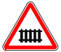
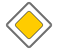
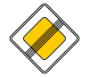
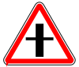
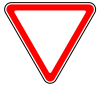
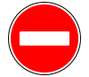

Знаки дорожного движения делятся на 8 категорий:

1.1. Железнодорожный переезд со шлагбаумом
1.2. Железнодорожный переезд без шлагбаумом

1.3.1. Однопутная железная дорога
...

Знак 2.1. Главная дорога

Знак 2.2. Конец главной дороги

Знак 2.3.1. Пересечение со второстепенной дорогой

Знак 2.4. Уступи дорогу

Знак 3.1. Въезд запрещен
...